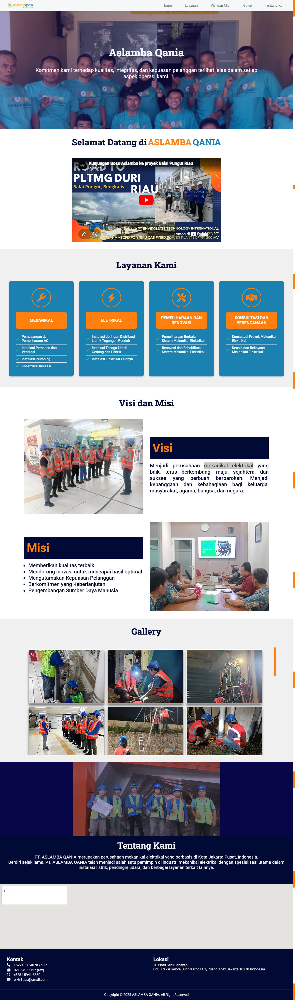
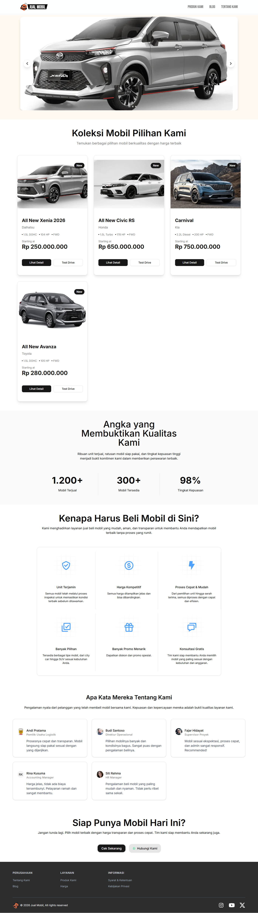
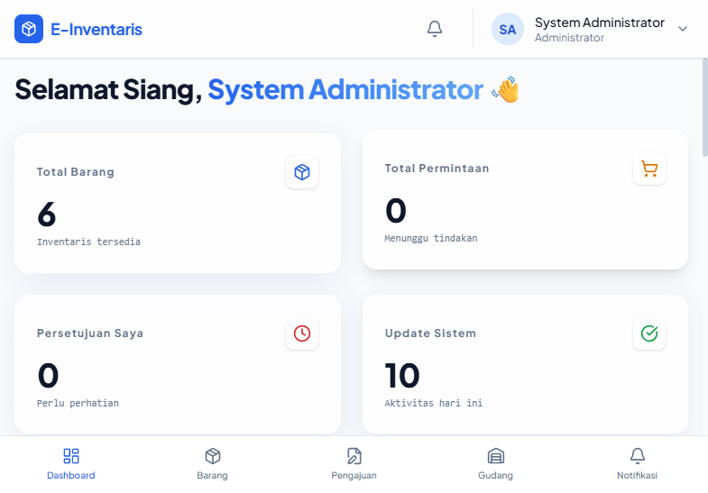

My name is Julio Rohmatulloh, I bridge 9+ years of hands-on IT experience with a deep academic foundation in Informatics Engineering. From managing complex networks for 500+ users to mastering AI and Web Development, I specialize in building stable, scalable technical solutions.
A collection of projects I've worked on.

I developed and deployed a responsive company profile website for Aslamba Qania, a Mechanical & Electrical company, using HTML and CSS. The website was hosted on Vercel for fast and cost-efficient deployment.

I created a responsive car sales website template using HTML, CSS, and Tina CMS. The platform makes it easy to manage car listings and website content, with updates handled through GitHub for simple maintenance and deployment.

I developed an E-Inventory system for SMK Al Basyariah using TanStack and Turso to manage inventory and procurement. The system helps simplify stock tracking, item management, and procurement processes through a responsive web application.